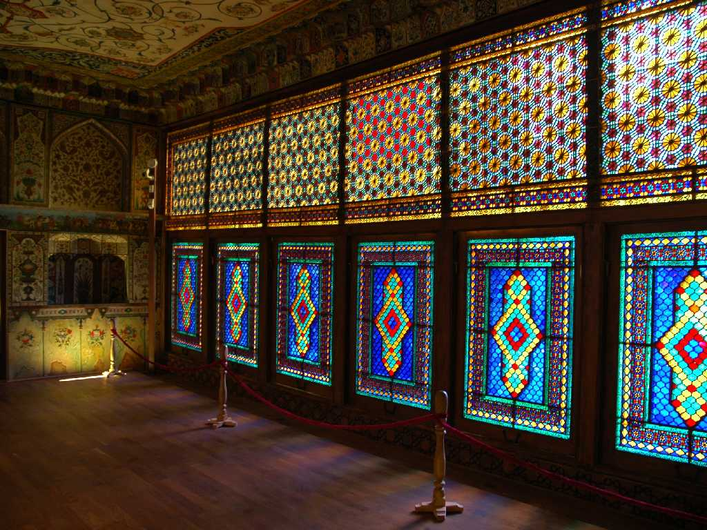
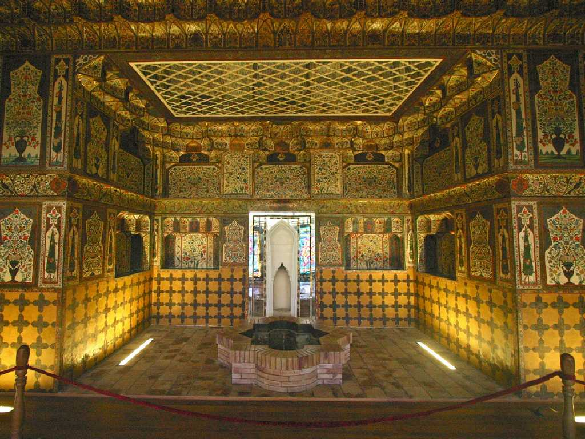
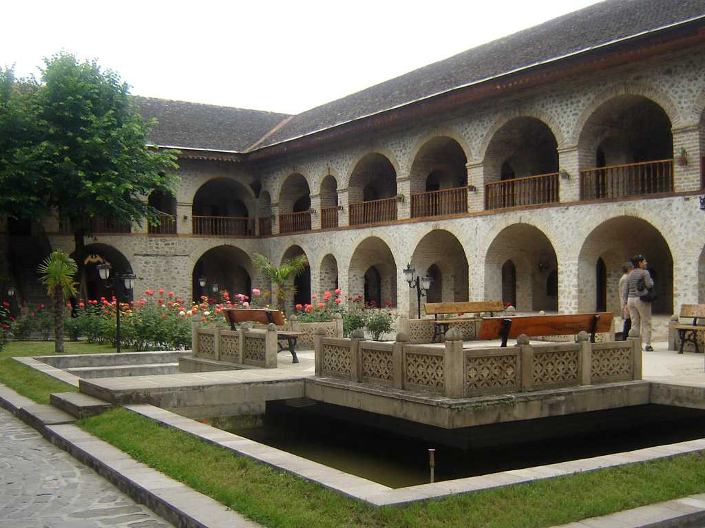

Khan Palace Sheki
シェキハーン国の首都であったシェキの街にあるシェキハーン宮殿は１７６１年から７年間を費やして創建された釘を１本も使わない木組み建築で細密なステンドグラスや室内の装飾が美しい

Inside Khan Palace
ステンドグラスは特にシェベケ窓と言われベネチアガラスをくるみの木で組み合わせたもので美しさに圧倒される

Karvan Saray Sheki
宮殿から下った隊商宿のキャラバンサライレストランで夕食